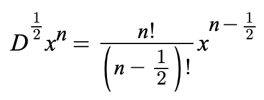
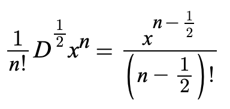
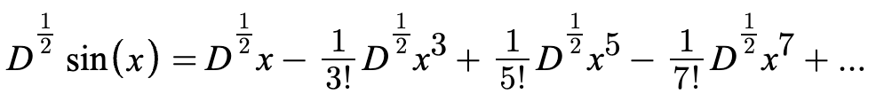
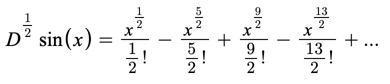
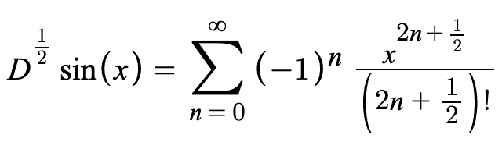
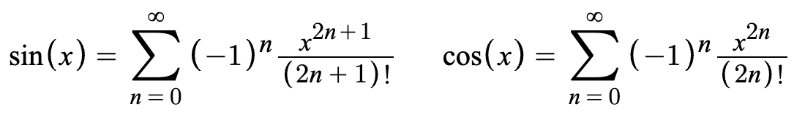
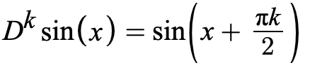

Half derivative of sine
15 Sep 2021
A few days ago I came across this video by Dr. Peyam, where he extends the power rule of differential calculus to allow for fractional derivatives. Using the formula in the video, I decided to calculate the half derivative of the sine function.
Before we begin, here is the power rule for half derivatives:
And here is another equation which will be useful later:
Now let's calculate the half derivative of sine. To start, we'll begin with the Taylor series. The sine function can be written as the following infinite polynomial:

The half derivative, like the normal derivative, is a linear map, so we can distribute it over each term like so:
Using the second equation from before, we can simplify all of the half derivatives.
Or using the sigma notation:
That's it! We now have a relatively simple formula for the half derivative of sine. By comparing it with the Taylor series for the sine and cosine functions, you can see that the half derivative of sine is in some sense "halfway between" sine and cosine.
In the series for sine, the exponent is 2n + 1. In the formula for the half derivative of sine, the exponent is 2n + 1/2. And in the series for cosine (i.e. the first derivative of sine), the exponent is simply 2n.
I strongly suspect that the half derivative of sine is equal to sin(x + pi/4). It certainly looks that way when plotted on a chart. In fact, I suspect there is a more general pattern:
This equation is certainly true for integer values of "k", but I'm not sure how to prove the more general case.